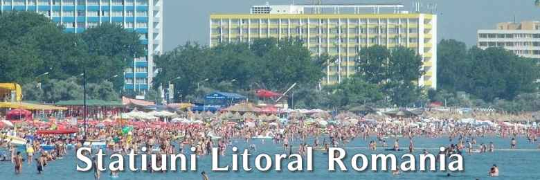
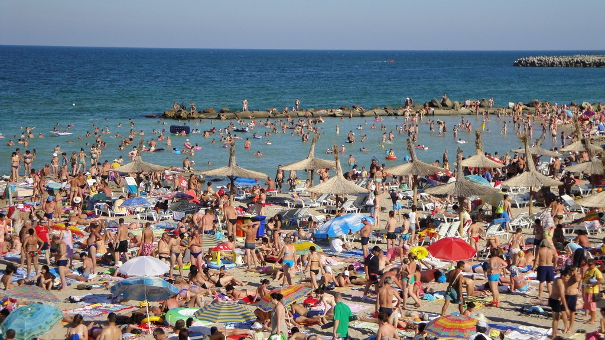

Litoralul românesc de la Marea Neagră se întinde de la golful Musura, la vărsarea fluviului Dunărea în mare prin Delta Dunării, şi până la graniţa cu Bulgaria de lângă localitatea Vama Veche. Prin „staţiuni” se pot înţelege fie localităţi permanente, fie staţiuni balneoclimaterice de vară, închise şi pustii iarna.

Toate staţiunile se află situate în Judeţul Constanţa, oferind spaţii de cazare de toate categoriile (hoteluri de la o stea pana la cinci stele, moteluri, pensiuni, campinguri, vile sau apartamente cu regim hotelier, etc.).
Aceste staţiuni de la Marea Neagră ale României au fost construite în dreptul plajelor cu nisip, parţial mineral (aluviunile dunărene) şi parţial cochilifer.
Staţiunea cea mai întinsă şi cu cele mai multe spaţii de cazare este Mamaia. Aceasta este şi cea mai vizitată, fiind amplasată la nordul Municipiului Constanţa, pe grindul (cordonul litoral) care separă Marea Neagră de Lacul Siutghiol. O particularitate a Mamaiei este dimensiunea plajei, lată de 250 metri, şi lungă de 8 kilometri.
Mai la sud se găsesc staţiunile Eforie Nord şi Eforie Sud care sunt şi oraşe, satul şi staţiunea Costineşti care este considerată staţiunea tinerilor, apoi şirul celor şase staţiuni de la Comorova, anume „Olimp”, „Neptun”, „Jupiter”, „Cap Aurora”, „Venus” şi „Saturn”, botezate, ca şi planetele sistemului solar, după zeii romani. Clasificarea lor administrativă ca „localităţi ale judeţului Constanţa” este, din punct de vedere geografic, o greşeală, deoarece o „localitate” are populaţie permanentă, ceeace nu este cazul acestor şase staţiuni, de fapt cartiere ale municipiului Mangalia.

În apropierea graniţei cu Bulgaria sunt satele şi staţiunile 2 Mai şi Vama Veche, adevărate localităţi permanent populate.